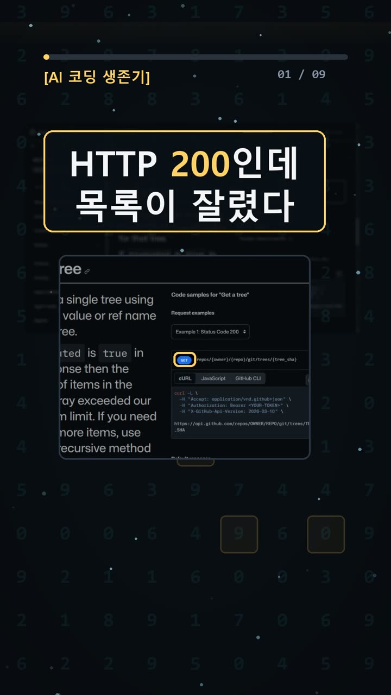
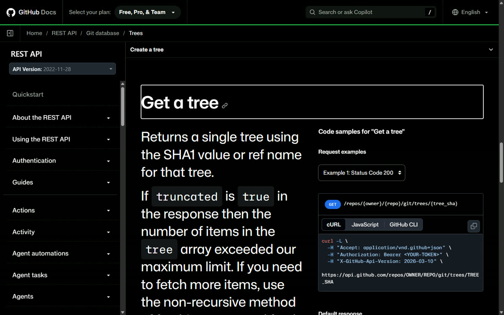
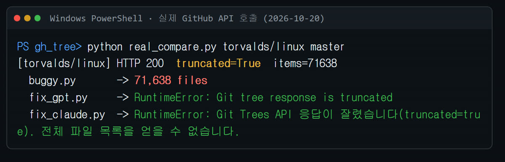
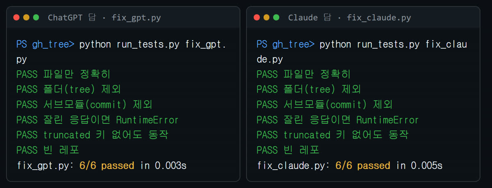

이 포스팅은 쿠팡 파트너스 및 토스쇼핑 쉐어링크 활동의 일환으로, 이에 따른 일정액의 수수료를 제공받습니다.
chatgpt 클로드 코딩 비교: HTTP 200인데 파일 목록이 잘렸다
한눈에 보기
- 깃허브 Trees API(프로그램끼리 데이터를 주고받는 창구)는 HTTP 200(성공)을 돌려주면서도 파일 목록을 잘라서 줄 수 있습니다. 리눅스 레포를 조회해 보니 항목 71,638개에서
truncated=True(잘림)였어요. - 고치는 데 필요한 코드는 짧습니다. 잘림 검사 2줄과 파일(blob)만 고르는 필터 1줄이면 됩니다.
- 버그가 있는 코드를 ChatGPT와 Claude에 똑같이 보여 주고 고쳐 달라고 했어요. 둘 다 한 번에 테스트 6개를 모두 통과해 동점이었습니다.
시작 전에 확인할 것
- 요금: GitHub Trees API는 공개 레포(저장소)라면 키 없이 무료로 쓸 수 있습니다([GitHub 공식 문서](https://docs.github.com/en/rest/git/trees) 명시). gitingest도 무료 오픈소스(MIT 라이선스)예요.
- 호출 횟수 제한: 인증 없이 호출하면 응답 헤더
X-RateLimit-Remaining(남은 호출 횟수) 값이 52에서 48로 줄어드는 것까지만 확인했습니다. 시간당 몇 번까지 되는지는 이번에 문서로 확인하지 못했어요. - 계정: 공개 레포는 계정이 없어도 됩니다. gitingest로 비공개 레포를 볼 때만 GitHub 토큰(접속용 비밀 열쇠)이 필요해요.
- OS·파이썬: gitingest는 Python 3.8 이상이 필요합니다. 저희는 Windows 11 + Python 3.13.12에서 돌려 봤어요.
- 우리는 여기서 막혔어요: gitingest에 깃허브 주소(URL)를 바로 넣으려면 PC에 Git이 깔려 있어야 합니다. README의 요구사항에는 Python 3.8+만 적혀 있어요. 저희 PC에는 Git이 없어서 실행이 실패했습니다(아래 '자주 막히는 곳' 참고).
설치 방법
1. gitingest 설치 — 📄 공식 문서 기준 ([README](https://github.com/coderamp-labs/gitingest), [PyPI](https://pypi.org/project/gitingest/))
pip install gitingest
pipx(프로그램을 따로따로 격리해서 설치해 주는 도구)를 쓴다면 아래처럼 설치합니다.
pipx install gitingest
2. 저희가 실제로 쓴 방법: 가상환경에 설치 — ✅ 직접 해 봄 가상환경(이 프로젝트에서만 쓰는 파이썬 공간)을 만들고 그 안에 설치했어요.
python -m venv .venv pip install --isolated gitingest
- 성공 표시: 설치에 35.1초 걸렸고 gitingest 0.3.1이 설치됐습니다. PyPI 기준 최신 버전도 0.3.1(2025-07-31 업로드)이에요.
3. 설치 확인 — ✅ 직접 해 봄
gitingest --help
- 성공 표시: 옵션 목록이 출력됩니다.

사용 방법
1. 전체 파일 목록 받기 — 📄 공식 문서 기준 / ✅ 직접 해 봄
GET https://api.github.com/repos/OWNER/REPO/git/trees/BRANCH?recursive=1
OWNER는 소유자, REPO는 저장소 이름, BRANCH는 브랜치 이름입니다. 문서에 따르면 레포 이름 뒤에 .git은 붙이지 않아요.
- 주의(📄): 문서상
recursive(하위 폴더까지 전부 받기)는 값이 무엇이든 켜집니다. 0, 1, "true", "false"를 넣어도 모두 켜져요. 끄고 싶으면 파라미터를 아예 빼야 합니다.
2. 응답을 받으면 바로 잘림 검사 — ✅ 직접 해 봄
if data.get('truncated'):
raise RuntimeError('트리가 잘림')
- 성공 표시: 잘린 응답이 오면 프로그램이 그 자리에서 멈춥니다.
- 잘렸다면(📄): 공식 문서는
recursive없이 하위 트리(폴더)를 하나씩 나눠 받으라고 안내합니다.
3. 파일만 고르기 — ✅ 직접 해 봄
[i['path'] for i in data['tree'] if i['type'] == 'blob']
blob은 파일, tree는 폴더, commit은 서브모듈(레포 안에 들어 있는 다른 레포)입니다. 파일만 세려면 blob만 남기세요.
4. AI에게 레포를 통째로 넘기고 싶을 때(gitingest) — ✅ 직접 해 봄
gitingest 폴더경로
- 성공 표시:
digest.txt파일이 생깁니다. 저희는 출력 파일 이름을digest_local.txt로 했어요. - 설치 없이 쓰기(📄): 깃허브 주소에서
hub를ingest로 바꾸면(github.com → gitingest.com) 웹에서 바로 요약을 볼 수 있습니다.

우리가 직접 해 본 결과
확인 수준: verified (2026-10-20 실측)
① 리눅스 레포 실측 (인증 없음, Python urllib)
torvalds/linuxmaster, recursive=1 → 3.7초 만에 HTTP 200, truncated=True, 항목 71,638개(파일 67,498 + 폴더 4,140)가 왔어요.- 문서상 한도는 100,000개, 7MB입니다. 그런데 100,000개가 안 돼도 잘렸어요. 이번 실험에서 예상과 가장 달랐던 부분이에요.
- 버그 코드는 71,638개를 전부 '파일'이라고 돌려줬습니다. GPT·Claude 수정본은 둘 다 RuntimeError를 내고 바로 멈췄어요.
② gitingest 레포 (잘리지 않은 경우)
- 항목 148개 중 폴더 23개, 파일 125개였습니다. 버그 코드는 148개, 수정본은 125개를 셌어요.
- 같은 레포의 zip을 풀어서 센 실제 파일 수도 125개로 일치했습니다.
③ 디버깅 대결
- 저희가 만든
buggy.py(폴더·서브모듈을 빼지 않고 truncated를 무시하는 코드)는 테스트 6개 중 2개만 통과했어요. 잘린 목업(가짜 응답) 데이터를 넣었더니HTTP 200 OK -> 4 files라고 정상처럼 처리했습니다. - 코드와 실패 출력을 같이 보여 주고 "고쳐 줘, 코드만"이라고 한 번씩만 물었어요.
- ChatGPT(Chat 모드·추론 Medium): 6/6 통과, 7.4초(서버 기록 기준)
- Claude(Opus 5.5 중간): 6/6 통과, 6.8초(브라우저 측정)
- 정답률은 동점입니다. 속도는 재는 방식이 서로 달라서 승부를 가리는 근거로 쓰지 않았어요.
④ gitingest 로컬 실행
- 4.5초 만에
Files analyzed: 109,Estimated tokens: 85.9k가 나왔습니다. 실제 파일은 125개인데, 기본 설정이 이미지·svg·ico·.gitignore·.vscode 같은 파일을 빼기 때문이에요.

실험의 한계: AI마다 한 번씩만 물었고 테스트는 6개입니다. AI에게 코드를 처음부터 짜 달라고 한 게 아니라 에러를 보여 주고 고쳐 달라고 한 실험이에요. 그래서 'AI가 처음 짜 주는 코드가 truncated를 무시한다'는 이번에 확인하지 않았습니다. 원문 프롬프트와 답변 전체는 [AI 실험노트](https://compaction19-blip.github.io/ai-lab-notes/)에 올려 두었어요.
자주 막히는 곳
- gitingest에 URL을 넣었더니
Error: [WinError 2] 지정된 파일을 찾을 수 없습니다가 떠요.
→ PC에 Git이 없어서 생기는 에러예요. 저희는 Git을 설치하지 않고, 레포 zip을 받아 풀어서 로컬 폴더 경로로 실행하는 방법으로 해결했습니다.
- gitingest 파일 수가 실제 파일 수보다 적어요.
→ 기본 설정에서 일부 파일을 빼기 때문이에요. 전체 파일 수를 확인할 때는 사용 방법 2~3번(Trees API + 검사)을 쓰세요.
- recursive=0으로 했는데도 하위 폴더까지 다 와요.
→ 문서상 값이 무엇이든 켜집니다. 파라미터 자체를 빼세요.
- 200이 왔으니 괜찮은 거 아닌가요?
→ 아닙니다. 리눅스 레포처럼 200이 와도 잘릴 수 있어요. truncated를 꼭 확인하세요.
비슷한 질문을 AI에 할 때 확인할 것
- AI가 준 코드에
truncated검사가 있는지 type == 'blob'필터로 폴더를 빼는지- 결과 개수를 zip 파일 수 같은 다른 방법과 한 번 대조해 봤는지

※ 2~4번 그림은 실제 터미널(명령어를 입력하는 검은 창) 출력 원문을 큰 글씨로 다시 그린 화면이에요. 터미널 창을 그대로 캡처한 것은 아닙니다.
🧰 오늘의 실험실 생존 세트 — 밤새 실험 돌릴 때 쟁여 두는 것들


정리
Trees API는 "성공(200)"이라고 답하면서 목록을 잘라 줄 수 있습니다. 그러니 응답을 받으면 truncated를 먼저 보고, 파일은 blob만 세세요. ChatGPT와 Claude는 둘 다 이 버그를 한 번에 고쳤습니다(6/6 동점). gitingest는 AI에게 레포를 넘길 때 편하지만, URL 모드에는 Git이 필요하고 일부 파일은 기본으로 빠집니다. 실험 장면은 [쇼츠](https://youtube.com/shorts/G9Ah2SZ3uzM)에서 볼 수 있어요.
이 글은 실제 실험 기록을 바탕으로 AI 도구와 함께 정리했어요.
혹시 글에서 틀린 부분이나 고쳐야 할 부분이 보이면 유튜브·스레드 댓글로 알려 주시면 정말 감사하겠습니다. 바로 확인해서 고칠게요!
🛒 다시 보기: 오늘의 생존 세트
🎙️ AI 음성이 궁금하다면
우리 채널 내레이션은 타입캐스트를 쓰지만, 영어·다국어 AI 음성을 실험해 보고 싶다면 ElevenLabs도 많이 쓰여요.
ElevenLabs 둘러보기 (제휴)🎬 쇼츠로 다시 보기 · 🧵 함께 이야기하기
🧵 스레드 @alligatorxor에서 오늘 실험 이야기 나누기 · ▶ 유튜브 새AI실험노트 다른 쇼츠 보기 · 📒 실험노트 홈